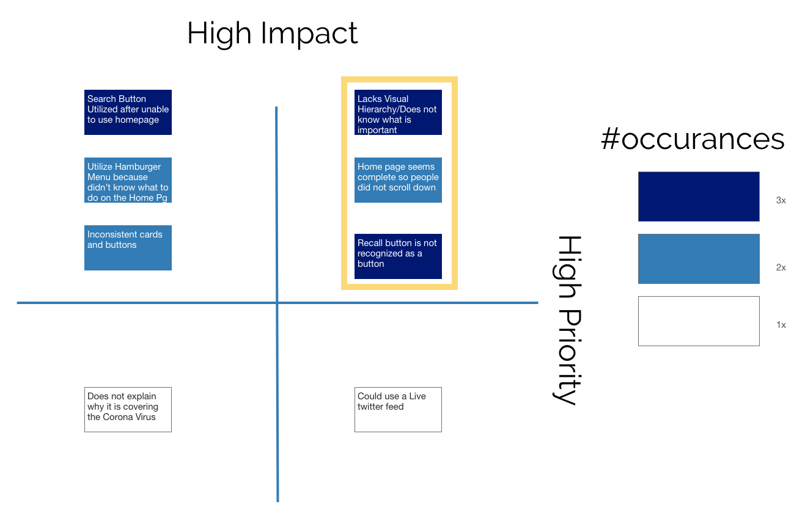

UX/UI Designers:
Timothy Quoe, Farzad Farzaneh
Problem
The FDA website displays issues in consistency, hierarchy, and usability.
Solution
We utilized more consistent use of cards and buttons, as well as changed how one would navigate the website.
Introduction
Blankets are needed for children to feel comfort and warmth. The organization, Project Linus, provides homemade blankets to children in need across the united states.
I am a UX/UI design students who worked in a group to redesign this non-profit’s website for a UX/UI bootcamp. We were unable to obtain a stakeholder interview due to the current Covid-19 outbreak. Due to this, during our heuristics analysis, we probed their website for key performance indicators and for additional insight into the needs of the organization.
Research
Methodology
We did a total of 15 remote user tests of the Food and Drug Administration website. Our participants were chosen from a pool of friends and family based on convenience. All individuals were middle class Californians in their 20s.
We focused on two tasks that we hypothesized that would be utilized by FDA website users:
- Find the product recall list spreadsheet on the Recalls, Market, Withdrawals, and Safety Alerts page. (Our user testers confirmed they would use the FDA website to search for product recalls)
- Find the recent press announcements page.
Task Flow
We identified three flows that users took to get to the Recalls, Market, Withdrawals, and Safety Alerts page. The blue path was the path that most of our users used to complete this task

We identified 2 flows that users took to reach the press announcements page. The blue path was where most of our participants chose to complete this task.

Usability testing (priority matrix)
We found that the FDA website has multiple user identified issues. Of these issues, we will focus on the highlight high impact/high priority items.
User pain points (header)

User pain points (body)
Color test
Utilizing Adobe Color(https://color.adobe.com/create/image) we isolated the following colors from the FDA website.
Screen reader test
Doing a screen reader test using https://accessible-colors.com/ we confirmed that the text used on the FDA website meets accessibility requirements. With that in mind, we will retain the color scheme of the website with our redesign.
Problem statement
The FDA website utilizes a user interface that lack a clear hierarchy, unclear drop down, and has inconsistent use of button. These navigation issues make the website difficult for users to find the information they need.
User persona
The following persona will help us understand our users. Jennifer is a combination of the insights we received from our user testing.
Understanding information architecture
We did not get much information on how user would utilize the hamburger navigation menu within the header during initial testing. After doing a card sort to reform the information architecture of the site, we did further user testing.

Folksonomy and taxonomy
We applied the folksonomy & taxonomy method in our government website redesign “FDA.gov “ project to create more simplicity for users. This minimizes the size of the content of text by reframing the words. These changes were made to our information architecture:
- Featured & please be advised to Emergency preparedness and response
- Featured Topic to About FDA
- Recent press announcement & FDA Voices & Perspectives FDA expert to News and events
- Recalls, Market withdrawals & safety alerts to Product Safety
- Recently published guidelines to Regulatory information
Low-fidelity wireframes
Website
Mobile navigation
User prototype testing
- 1. We got feedback on our drop down size and decided to make it bigger in the next iteration.
- 2. We got feedback on the size of the fonts. We decided to use larger font sizes for ease of readability in the next iteration.
Building a high-fidelity prototype
Style guide
The style guide was important, especially in a team setting. It allows for consistency in design. It also gives one the ability to organize component in an easy to reach place.

User testing continued
After an additional user test of specifically the navigation bar, we did another priority matrix. We ended up making several changes using this as a guide.
Additional iteration
We increased the negative space between the elements in the bread crumb to make it easier to parse from a glance.
Responsive mockup (with UI Design)
Mobile
Design decisions
Desktop
Design decisions
High-fidelity wireframes
Website


Mobile navigation

Key learnings and takeaways
Detail is important. Understanding what is important about a content rich site, such as a government website, means maintaining the skeleton. It is tempting to remove links that seem unnecessary, but redesigning means that link has to exist somewhere. Through card sorting, we were able to reorganize the content to be more easily parsable by users. This is reflected by the more balanced and consistent version of the redesigned website.